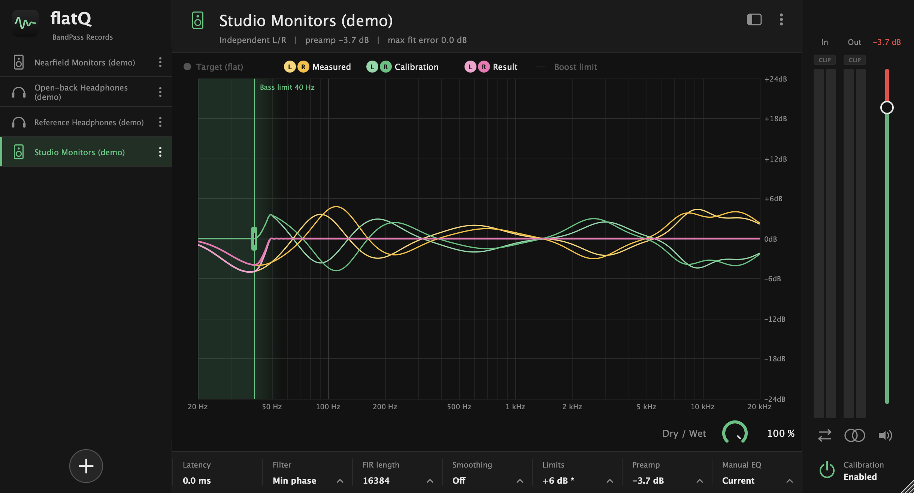
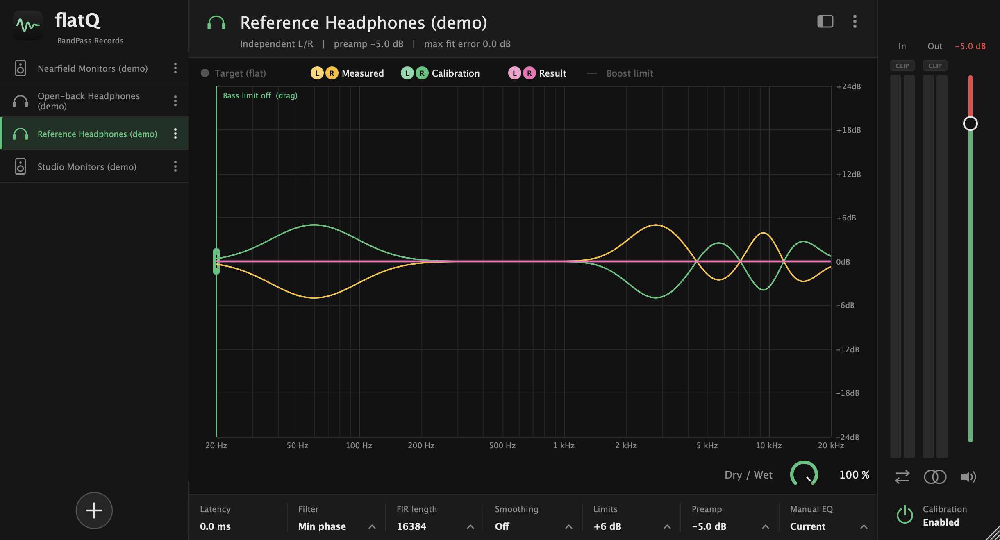

Hear your music as it was mixed.
flatQ applies a correction profile for your headphones or speakers to everything you play, so what you hear is the music and not the transducer.
macOS · Windows · Linux

Screenshots
Headphones and speakers, side by side
The same view for both: the measured response, the calibration and the result, for each channel.

What it does
A flat reference, on any monitor
Every transducer colours the sound. flatQ measures nothing and guesses nothing: it loads a profile and applies the inverse of it.
Profiles
Bring your own calibration
Load a profile for your headphones or your monitors and switch between them from the library on the left. Rename, duplicate, export or delete from the menu on each one.
- flatQ profiles and RME TotalMix Room EQ files
- AutoEq measurement and target CSVs, turned into a profile
- Speaker profiles keep separate left and right curves
Limits
Correction without the clipping
Deep dips in a measurement ask for huge boosts. flatQ keeps them in check so a profile never pushes your output into the red.
- Global max boost plus the profile's own ceiling
- A bass limit that cancels boosts below the frequency you choose
- Slope limiter and treble smoothing against ringing
- Automatic preamp, shown right on the output fader
Control
See it. Compare it. Switch it off.
The graph shows the target, what your monitor does and the correction in between, for each channel. One button turns the calibration off to hear the difference.
- Input and output meters with clip lights
- Mono, swap channels, mute and a dry / wet mix
- Notices on the graph whenever something changes what you hear
Under the hood
Built for critical listening
Pick the trade-off between latency and phase accuracy that suits the job.
Default
Minimum-phase FIR
A smooth, natural correction with no pre-ringing. 4096 to 65536 taps; 16384 by default.
Accuracy
Linear-phase FIR
Perfectly symmetric, for when phase accuracy matters more than latency.
Low latency
IIR
Peaking filters with 6 or 48 bands per octave, for monitoring while you record.
Manual
31-band trim
Adjust each third-octave band on top of the profile, per channel or linked, and save the result as a new profile.
Export
Skip on offline export
Pass the audio through untouched during offline renders, so a mixdown never carries your monitor correction.
Targets
Flat, or a curve you prefer
Ships with the AutoEq target curves, such as Harman, for importing a measurement against the target you like.
Formats
Put it last on your master
Insert flatQ as the last effect on your master or stereo out.
| Platform | VST3 | AU | Standalone |
|---|---|---|---|
| macOS | ✓ | ✓ | ✓ |
| Windows | ✓ | — | ✓ |
| Linux | ✓ | — | ✓ |
Download
Get flatQ
Pick your system. Every release is on GitHub.
macOS
VST3, Audio Unit and standalone app.
Installer (.pkg)VST3 · AU · Standalone (.zip)
Not notarized by Apple yet: right-click the app and choose Open the first time.
Windows
VST3 and standalone app.
Installer (.exe)VST3 · Standalone (.zip)
Not code-signed yet: Windows may show a warning on first run.
Version 0.1.0. Source code and every release on GitHub.